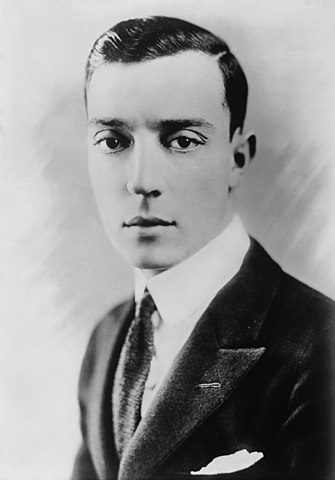

Buster Keaton
Buster Keaton, issu d'une famille d'artistes, débute par le music-hall. Il se lance au cinéma en 1917 dans les films de Fatty Arbuckle, le roi du "slapstick", mais ce n'est qu'en 1919 qu'il obtient son premier grand rôle dans La Maison demontable. C'est dans une série de courts-métrages (Frigo demenageur ou Frigo a l'Electric Hotel en 1922) qu'il confirme son talent pour la comédie burlesque. Celui que l'on a appelé tout au long de sa carrière "l'homme qui ne rit jamais", par opposition à Charlie Chaplin, se lance dans le long-métrage en tant que réalisateur et interprète. Suivant toujours les aventures d'un homme dépassé par ses problèmes, il enchaîne les gags visuels avec intelligence et efficacité dans des films comme Les Trois Ages, une parodie d'Intolerance de D.W. Griffith et Les Lois de l'hospitalite sur le thème de la vendetta. Il est à son apogée dans La Croisiere du Navigator (1924) et Le Mécano de la General (1926), derniers films dont il a le plein contrôle. Réputé avoir filmé le déclin du comique, le réalisateur Edward Sedgwick met en scène Buster Keaton dans des oeuvres redécouvertes aujourd'hui : Le Caméraman (1928), Le Figurant (1929) et Le metteur en scène (1930) en sont les exemples types. Si sa carrière décline ce n'est vraiment qu'à la fin des années 30 : alcoolique, vieillissant, souffrant du passage au parlant, il se contente de caméos comme dans Boulevard du crépuscule de Billy Wilder. Ce film nostalgique l'oppose aux stars du muet des années 20 : Gloria Swanson et Erich Von Stroheim. Surnommé "le zombie", il donne tout de même une prestation comique remarquée aux côtés de Charlie Chaplin dans Les Feux de la rampe (1956). A la fin de sa vie, l'acteur est honoré d'un oscar pour l'ensemble de sa carrière et entre enfin dans la légende du 7è art.